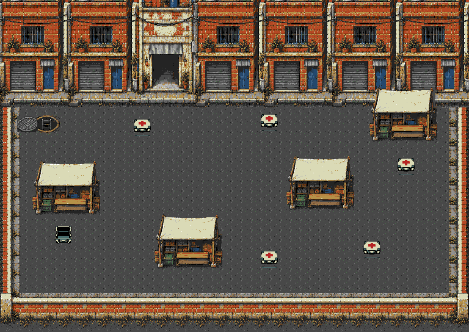
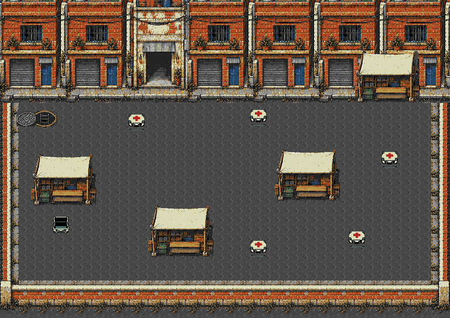
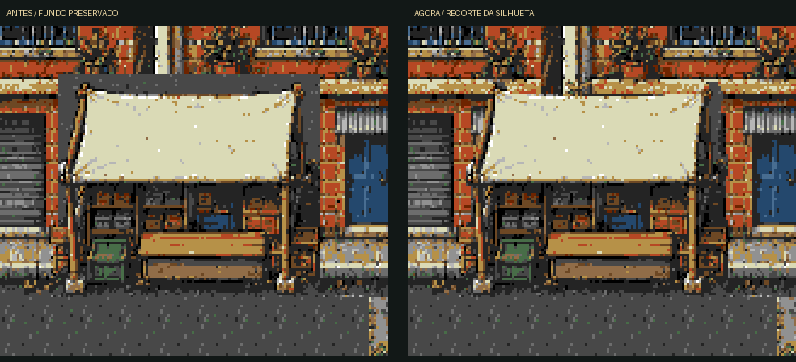
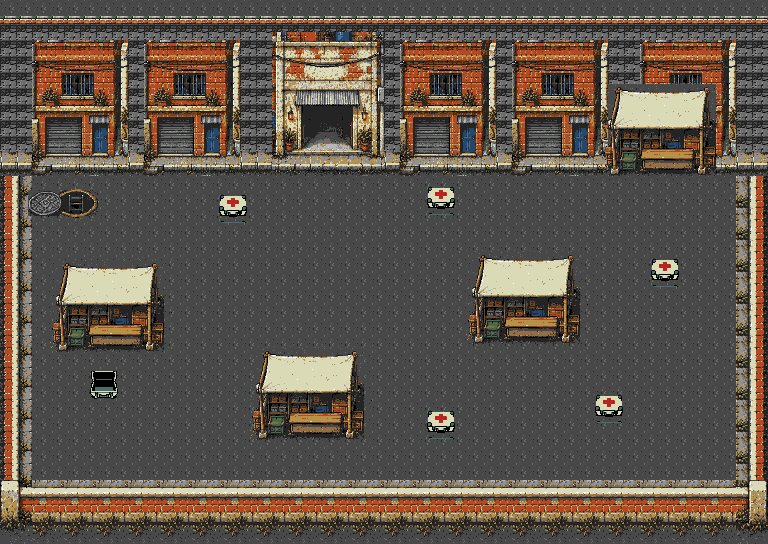

Fase 7 · Feira urbana do Último Chão
A fase agora tem asfalto, saída dos esgotos por um bueiro aberto, comércio e quatro barracas de lona branca. O cenário foi montado inteiro antes da divisão em módulos. Os 304 px de altura útil continuam disponíveis; as cargas foram distribuídas para permitir coleta e retorno ao depósito.
Acesso: FASE TESTE → Campanha → 7.
Mundo: 768×544 pxCampo: 304 px na verticalBarracas: 4Objetivo: 5 cargasReserva: 634/640 tiles
Composição urbana completa
Reconstrução dos mesmos padrões e da mesma paleta usados pela ROM. O bueiro fica junto da chegada, no alto à esquerda; a barraca esquerda é o depósito. As demais barracas criam rotas de contorno. As fachadas agora ficam encostadas de uma lateral à outra, como na imagem original. A faixa cinza e os vãos acrescentados na montagem anterior foram removidos. O recorte das tendas foi limpo: a fachada aparece ao redor da lona e dos postes, sem o retângulo de asfalto. A tenda do topo desceu 56 px (de y80 para y136), mais da metade dos 104 px de altura. Sua colisão acompanha a nova posição; os demais elementos permanecem no lugar.

Comparar posição anterior da tenda (56 px acima)

Histórico: antes e depois do recorte transparente

Comparar com a montagem anterior, com a faixa cinza

Comparar com o pátio de terra anterior

Exploração estática da composição com 24 px reservados para o HUD. As capturas abaixo mostram o jogo em execução.
Capturas da ROM
Genesis Plus GX, ROM de produção. Saída do bueiro, abertura, coleta e entrega usam o controle normal. As viagens de verificação isolam inimigos e não alteram posições ou progresso durante o percurso. Combate natural e carga foram medidos separadamente.
 Saída dos esgotos · Bueiro aberto e chegada livre
Saída dos esgotos · Bueiro aberto e chegada livre Comércio · Coleta da primeira carga
Comércio · Coleta da primeira carga Barracas · Quarta carga reposicionada
Barracas · Quarta carga reposicionada Objetivo · Cinco entregas concluídas
Objetivo · Cinco entregas concluídas Área inferior · Calçada e muro completos
Área inferior · Calçada e muro completos Carga máxima · Quatro inimigos e grupos de tiros
Carga máxima · Quatro inimigos e grupos de tirosMemória, circulação e carga
O cenário mantém 978 padrões na ROM; a janela conservadora exige no máximo 552. O cache reserva 560 posições e as cargas usam 74: 634/640 tiles, 20.288 bytes residentes. Seis posições livres. Gráficos: 31.296 bytes na ROM; mapa: 13.056 bytes; controle do cache: 6.436 bytes de heap, liberados na pausa.
As quatro barracas reutilizam a mesma silhueta completa, com lona, apoios, caixas e sombra. A máscara segue esse contorno e revela o cenário original ao redor. É aplicada na montagem do mapa; não exige transparência em tempo real nem aumenta os 634/640 tiles reservados. O cenário usa uma paleta RGB333 de 16 cores adaptada ao asfalto cinza e às lonas brancas, preservando o estilo de tijolo quente e portas azuis. A empacotação não substitui padrões por aproximações.
Passaram em NTSC/PAL: pixels de cenário e cargas, rolagem nos dois sentidos e na vertical, saída livre do bueiro, colisão das quatro barracas, limites, restauração após pausa e cinco entregas completas. As 2.561 posições livres da malha estão conectadas. As fases 8, 13A/13B e os 19 acessos da campanha também passaram nas regressões compartilhadas.
Há quedas sob carga. Quatro inimigos e seis tiros por grupo, durante 20 s por trecho, com IA e trajetórias ativas. Vida protegida e reposição somente dos tiros inativos. A meta de 60/50 FPS fixos não foi atingida em todos os trechos. A formação inferior foi adaptada às barracas e pode interagir com cargas durante a patrulha; não é uma comparação direta com o pátio anterior.
| Trecho | NTSC · FPS | PAL · FPS |
|---|
| Comércio | 59.850 | 50.000 |
| Depósito | 56.600 | 50.000 |
| Barracas inferiores | 55.100 | 49.950 |
O bueiro é um marco visual atravessável da chegada dos esgotos, sem nova animação de transição, bloqueio ou dano. Combate natural automatizado de até 30 s é registrado à parte. Transporte completo sob combate, dificuldade humana e hardware físico não certificados.
Imagem-base, prompt e reprodução
Imagem-base criada com ImageGen integrado, usando o pátio anterior como base da alteração e a igreja original como referência de câmera e estilo. A composição nativa acima é a montagem efetiva do jogo, com módulos completos repetidos para caber na reserva.
ROM verificada: 5f443b87a621026298538b705b59051d6cfce2bc71c9904db61c5ac45b5280be